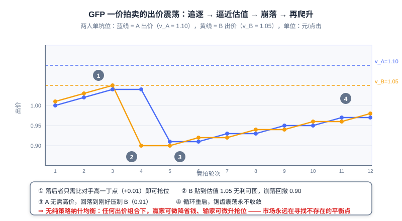

竞价机制：从一价到二价
📝 Before You Continue: 本章需先读 12.2（eCPM 与计费模式）——所有排序与支付公式都建立在 eCPM 口径之上。本章引入的 IC/IR 概念会在 8.3（端到端生成式广告 EGA）中被深度使用，建议两章对照阅读。
搜索结果页最顶上那几条广告位，每个值多少钱？这个问题没有「正确答案」——它取决于一次拍卖怎么设计。广告系统价值 = 广告转化效率 × 计价机制 × 广告资源量 × 投放效率，计价机制是四大支柱中最「制度性」的一个：它不优化任何模型，却决定了所有参与者的行为方式。经济学告诉我们「价格围绕价值上下波动」，而一个好的 竞价机制（Auction Mechanism） 应当让价格无限逼近其价值。
这条路走得并不平坦。1998 年 Overture 首创付费搜索时采用一价拍卖，结果广告主们陷入了永不停歇的出价追逐战；2002 年 Google 引入二价思想后市场才稳定下来；而到 2019 年前后，程序化交易的头部交易所又集体回到了一价。一价 → 二价 → 再回一价，这个循环的每一步都蕴含着机制设计的深层逻辑。
读完本章，你将能够：
- 用 位置拍卖（Position Auction） 模型描述多坑位广告的分配与计价，写出期望价值 与 eCPM 排序规则
- 解释 广义第一高价（GFP） 为何不存在稳定的纯策略纳什均衡，并逐步推演两人出价的震荡循环
- 证明单坑位 二价拍卖（Vickrey Auction） 下如实出价是占优策略，并给出 激励兼容（IC） 与 个体理性（IR） 的形式化定义
- 手算 广义第二高价（GSP） 与 VCG 在多坑位下的支付与效用，说清二者在 truth-telling 与收费水平上的差异
- 用交互式模拟器亲手验证「虚报会发生什么」，完成 5 道分层练习题
12.3.0 位置拍卖模型：把「卖广告」变成数学问题
我们先建立一个能统一描述所有竞价场景的框架。设页面上有 个广告坑位、 个参与竞价的广告主；广告主 对「一次点击」有 真实估值（Valuation） （这是他的私人信息，平台看不到），并向平台提交 出价（Bid） （CPC 口径，即声称每次点击愿意付多少钱）。坑位有天然的优劣：位置越靠前越容易被点击，我们用 位置点击率 刻画， 是坑位 的点击率。
于是广告主 拿到坑位 的期望价值为：
一次点击值 元，坑位 以概率 产生点击，二者相乘就是这次展示对广告主的期望价值。这个模型叫 位置拍卖（Position Auction） ：多个广告主竞争多个有次序的坑位，坑位之间的唯一差异是点击率。对展示广告（CPM 结算）只有一个坑位，，模型退化为单坑位拍卖；搜索广告的信息流广告位、电商的推荐坑位，都是 的情形。
平台怎么看？平台看不到 ，只能按申报的出价计算每个组合的期望收益，即 12.2 引入的统一口径：
把广告主按出价从高到低排、依次配到点击率从高到低的坑位，总 eCPM 最大（排序不等式的直接推论）。所以无论采用哪种定价机制， 分配规则 几乎总是「按出价（乘以质量分）排序」——真正让各家机制分道扬镳的，是 定价规则 ：赢家到底付多少钱。
🧠 Mental Model: 排座位收费
把广告位想成教室里有次序的座位：前排看得清（高 CTR），后排看不清（低 CTR）。每个学生（广告主）心里都有前排座位值多少钱的底价（），但报名（出价 ）时可以撒谎。老师（平台）按报名高低排座位，然后收学费。关键在于学费怎么定：按「你自己报的价」收，学生就会疯狂试探底线；按「刚好压过你后面那个人」收，报真实底价才不吃亏。本章的全部内容，就是这一句直觉的严格化。
任何竞价机制都可以拆成两半： 分配规则（Allocation Rule） 决定「谁赢哪个坑」， 定价规则（Pricing Rule） 决定「付多少」。分配规则决定市场的效率（好广告是否拿到好位置），定价规则决定市场的诚实度（广告主是否愿意报出真实估值）。接下来的三节，我们将看到同一套分配规则配上三种不同定价规则——一价、二价、外部性定价——会导出截然不同的市场形态。
Analysis: 位置拍卖模型有两个简化假设：坑位点击率只与位置有关（真实系统还要乘以广告自身的质量分，即 排序）；广告主估值在一次拍卖内不变。尽管如此，它足以揭示机制设计的全部分歧点——分配与定价的分离、激励与稳定的权衡，后续所有工业复杂度都是围绕这个骨架做的加法。
12.3.1 一价拍卖 GFP 的失败：为什么「付自己出的价」行不通
最直觉的定价规则是 一价拍卖（First-Price Auction） ：谁出价高谁赢，赢家按自己的出价支付。推广到多个坑位就是 广义第一高价（Generalized First Price, GFP） ：按出价排序分配坑位，每个人按自己的出价付钱。1998 年 Overture 用这套机制开创了付费搜索，也在随后几年里让整个市场陷入了 chronic 的震荡。
问题出在哪？在一价下，你的支付与你的申报完全绑定——报高了自己多付，报低了自己省钱。假设单坑位、两个广告主 A 和 B，估值分别为 、（元/次点击）。每一轮拍卖的出价动态如下：
| 轮次 | A 的出价 | B 的出价 | 领先者 | 领先者该轮效用（元/点击） |
|---|---|---|---|---|
| 1 | 1.00 | 1.01 | B | 0.04 |
| 2 | 1.02 | 1.03 | B | 0.02 |
| 3 | 1.04 | 1.05 | B | 0.00（贴到估值，无利可图） |
| 4 | 1.04 | 0.90 （崩落回撤） | A | 0.06 |
| 5 | 0.91 （压价到刚好压制） | 0.90 | A | 0.19 |
| 6 | 0.91 | 0.92 | B | 0.13 |
| 7 | 0.93 | 0.92 | A | 0.17 |
| … | 缓慢爬升，逼近 1.05 后再次崩落 |
注意每一轮的两个细节：落后者永远只比对手 高一丁点 （0.01）就足以抢走坑位；而领先者一旦发现对手回撤，立刻把出价砍到刚好压过对手（1.04 → 0.91）。价格呈锯齿状循环：爬升—逼近估值—崩落—再爬升，永不收敛。
这个追逐没有终点，我们可以严格说明原因。纯策略纳什均衡（Pure-Strategy Nash Equilibrium） 要求存在一个出价组合，任何一方单独改变出价都无法获益。检验任意组合 、：只要两者差距大于最小加价单位，赢家 A 就可以降到 依然获胜并省下真金白银——偏离有利；而只要 B 的估值高于 A 的当前出价，B 加价 即可夺回坑位——偏离同样有利。两条修正规则互相追逐，永远不存在「双方都不想动」的组合。这正是刘鹏笔记中的结论：一价拍卖容易导致价格频繁波动的「纳什不均衡」。

图中蓝线是 A 的出价、黄线是 B 的出价，虚线是两人的估值上限。可以看到出价互相追逐着爬升，贴到估值后崩落，然后再爬升——市场永远在寻找一个不存在的平衡点。
市场层面的后果是系统性的。平台收入随出价锯齿剧烈波动，无法预测；广告主必须七乘二十四小时盯着对手调价，运营成本高企（当年甚至催生了专门的自动出价代理）；更糟的是，出价不再传达任何真实信息——你看到的 只是对手上一轮试探的结果，与他的真实估值 毫无关系。GFP 的失败告诉我们： 机制不是中性的容器，定价规则本身就在塑造参与者的行为。
Analysis: GFP 的教训在机制设计史上极为经典：分配效率没问题（出价高者得高位），坏的只是激励结构。它同时也解释了为什么「让广告主自己优化出价」在一价下行不通——出价是最优反应函数的迭代，而非一个可静态优化的参数。修复方向因此清晰：把「支付」与「申报」解耦，让谎报无利可图。
12.3.2 二价拍卖与激励兼容：让说真话成为最优策略
修复方案由经济学家 William Vickrey 于 1961 年提出（他因此获得 1996 年诺贝尔经济学奖）。二价拍卖（Second-Price Auction） ，也叫 Vickrey 拍卖 ：出价最高者赢，但按 第二高出价 支付。单坑位下，赢家支付的是「别人的价」，而不是「自己报的价」。
为什么这一改动如此关键？我们证明：在二价下，如实出价 是 占优策略（Dominant Strategy）——无论别人怎么出，说真话都不比任何谎报差。设你的估值为 ，其他广告主的最高出价为 ，考察两个偏离方向：
- 出低价 ：你的支付本来就跟自己的出价无关（赢了付 ），所以出低唯一改变的，是那些 的局面——这些局你按真话本可以赢且效用 ，现在却白丢了。赢面缩水，支付没变， 只会变差。
- 出高价 ：多赢来的都是那些 的局面——你赢了，但要付 ，效用 ，比不赢（效用 0）更惨。原本能赢的局面支付照旧， 也只会变差。
两个方向都堵死，恰好按估值出价同时避免了「白丢赢面」和「亏本赢」两种错误。支付与申报解耦，申报才敢暴露真话——这是二价拍卖全部魔力的来源。
🧠 Mental Model: 精明的举牌代理
二价拍卖等价于你委托一位绝对精明的代理去现场举牌：你告诉他你的底价 ，他永远只把价加到「刚好赢过在场最高出价」为止。你不用猜对手、不用留利润空间——报出真实底价，代理自动帮你省到极限。密封二价拍卖只是把这个代理做成了制度。
这个性质有正式名字，它们是贯穿本章与 8.3 的两个核心概念。激励兼容（Incentive Compatibility, IC） ：如实报告估值是占优策略，形式化地，对任意谎报 ：
个体理性（Individual Rationality, IR） ：参与拍卖不会让理性的参与者吃亏，即支付不超过申报价值 ，效用非负。IC 保证「说真话不亏」，IR 保证「参与不亏」——二者合起来，市场才有稳定的诚实参与者。
💡 Key Insight: 8.3 的 EGA 把 IC 量化为 ex-post regret（谎报最多能多赚多少，IC regret = 0）并写进损失函数，用 Sigmoid 支付率保证的正是 IR。本章的定义是那套端到端 machinery 的经济学原点——机制设计正从「后处理规则」变成「可微的模型约束」。
Analysis: 二价的严格 IC 只在单坑位成立。坑位一多，「按第二高出价支付」无法直接推广——不同坑位点击率不同，支付必须跨位置折算，而这个推广（下一节的 GSP）恰好丢掉了占优策略性质。单坑位是机制设计的实验室，多坑位才是工业战场。
12.3.3 广义第二高价 GSP：多坑位的工程折中
多坑位下怎么把二价思想推广？ 广义第二高价（Generalized Second Price, GSP） 给出工业界沿用二十年的答案：仍按出价（eCPM）排序分配坑位，但第 名广告主 按「下一名的 eCPM 折算到自己点击率」支付。CPC 计费下，第 位（坑位点击率 ，下一名出价 、坑位点击率 ）的每点击支付为：
末位没有「下一名的坑位」可参照，按 最低保留价（Reserve Price） 支付。直觉有三层。其一：你抢占坑位 ，把下一名挤到了坑位 ，你造成的「展示机会损失」以 eCPM 计就是 ，除以 折算成你的每次点击单价。其二：——你付的 eCPM 恰好等于下一名在其位置上的 eCPM，即 保住第 名所需的最小 eCPM。其三：你的支付只取决于下一名的出价，与你自己的申报解耦了一半——这正是二价思想的残留。
给一个完整数值例子。三个坑位 ，保留价 ；三个广告主甲、乙、丙估值分别为 （先假设如实出价以便对比机制，）。按出价排序：甲 坑位 1、乙 坑位 2、丙 坑位 3。支付与效用逐一可算：
| 坑位 | CTR | 广告主 | 出价 | 支付 （元/点击） | eCPM 支付 | 效用 |
|---|---|---|---|---|---|---|
| 1 | 0.40 | 甲 | 4.0 | 0.60 | ||
| 2 | 0.20 | 乙 | 3.0 | 0.20 | ||
| 3 | 0.10 | 丙 | 2.0 | 保留价 | 0.05 |
甲出价 4 元却只付 1.5 元——省下的 2.5 元正是二价机制给「敢报真话」的奖励。

但 GSP 有一个必须诚实地面对的缺陷： 它不是严格 truth-telling 的。刘鹏笔记的原话是：GSP「整体市场不是 Truth-telling 的，与 VCG 相比会收取广告主更多的费用」。用一个两坑位反例看清「说真话不必最优」。设 ，保留价 ；甲 、乙 ，均如实出价。甲占坑位 1，支付 ，效用 。但若甲把出价降到 2.0（主动落到坑位 2），只需付保留价 0.20，效用变为 ——说真话不是最优策略。GSP 下最优出价依赖对手的出价，不存在占优策略；当坑位间点击率差距小、下一名出价又高时，主动降档反而更划算。
那 GSP 为什么没有像 GFP 一样崩掉？因为它在博弈层面仍有秩序。GSP 存在 对称纳什均衡（Symmetric Nash Equilibrium, SNE） ，且该均衡是 无妒忌（Envy-free） 的：均衡中每个广告主都不想与相邻位置的人互换——若你顶到上一位，就得支付上一位的价位，效用不会提高。无妒忌意味着没有人有动机去抢别人的位置，市场得以稳定。也正是在均衡意义上，GSP 与 VCG 的收费差异显现：GSP 的均衡出价系统性高于真实估值，VCG 结算位于均衡收费区间的下界，因此 GSP 在多数均衡下 收取广告主更多费用。
Analysis: GSP 的胜利是工程折中的胜利。计算上，每次清算只需下一名的出价与两个坑位的 CTR，无需任何全局信息，毫秒级出价服务毫无压力；语义上，「你的价格由你后面的人决定」广告主一听就懂。理论性质（严格 IC）换工程性质（简单、稳健、可解释），这笔交易在二十年的工业实践中被证明是划算的——直到程序化时代多中介链路打破了这个平衡（见 12.3.5）。
12.3.4 VCG 机制：为「外部性」定价
如果说 GSP 是工程折中， VCG 机制（Vickrey-Clarke-Groves Mechanism） 就是理论最优解。它的定价哲学一句话可以说完： 每个广告主的收费，等于他给其他所有参与者造成的外部性损害——「你不在场，其他人本可多赚多少」。你被分配到坑位 ，就把你身后所有人往下挤了一位（甚至挤出榜单），每个人因此损失的价值之和，就是你该付的总账：
每点击支付再按坑位点击率折算：（实际系统再与保留价取大）。
🧠 Mental Model: 用地补偿
一块地多个申请人竞拍，VCG 的规则是：赢家不按自己出价付钱，而是补偿所有落选者因此损失的价值合计。你占用这块地的社会成本，就是别人失去它的机会成本——为机会成本付费，而不是为「赢」付费。
先验证一个关键退化：单坑位下 VCG 恰好等于二价。你在场时其他人福利为 0；你不在场时，第二名拿到唯一坑位，福利为 。外部性 ，折算到每点击支付 ——正是第二高出价。二价拍卖是 VCG 的单坑位特例。
再算一个两坑位的完整例子。广告主甲、乙、丙估值 ，如实出价；坑位 （丙落榜）。分配仍是甲 坑位 1、乙 坑位 2。逐个计算外部性：
甲（坑位 1） ：没有甲时，乙升至坑位 1（）、丙升至坑位 2（），他人福利合计 ；有甲时，乙在坑位 2（）、丙落榜（），合计 。外部性 ，每点击支付 ，效用 。
乙（坑位 2） ：没有乙时，丙拿到坑位 2（），甲不动（），合计 ；有乙时，丙落榜，合计 。外部性 ，每点击支付 ，效用 。
丙（落榜） ：没有丙时其他人不变，外部性为 0，支付 0，效用 0。
注意乙的账单为什么这么算：他损害的不是甲（甲反正拿坑位 1），而是被挤落榜的丙——VCG 精确到「每个人的位移」，而 GSP 只看下一名的出价折算，这就是两者的全部差距。
VCG 最诱人的性质是： 整体市场是 truth-telling 的 （刘鹏笔记原文）——如实出价是占优策略，且对任意坑位数成立。证明的关键是一个漂亮的改写。把效用展开：
第二项是个常数——「没有你时他人的福利」根本不取决于你怎么申报。于是最大化个人效用等价于最大化第一项，即 真实的社会总福利。而机制按你的申报选择「申报福利最大」的分配；当你如实申报时，机制恰好选到真实福利最大的分配——你的私心与社会的公心在数学上被对齐了。谎报只会诱导机制选一个「你以为好、实际不好」的分配。
Analysis: VCG 的工业处境是「理论满分、落地困难」。计算上，每个赢家都要做一次「除他之外的全局重排」，每次广告请求的服务端开销是 量级，在毫秒级出价链路里代价不菲。信息上，外部性计算需要知道所有参与者的完整收益结构，多级中介的程序化市场根本拿不全。认知上，「你付的是你给别人造成的损失」对广告主太反直觉，账单难以解释、销售难以推销。因此工业界长期偏好 GSP，Meta（Facebook）是少数大规模坚持 VCG 的主流平台。
12.3.5 GSP vs VCG 对比与「回到一价」
三种机制摆在一起，差异一目了然：
| 维度 | GFP（广义一价） | GSP（广义二价） | VCG |
|---|---|---|---|
| Truth-telling | 否，虚报有利可图 | 否，非严格 IC（但存在对称纳什均衡） | 是，占优策略 IC |
| 收费水平 | 支付 = 己方出价，剧烈波动 | 多数均衡下高于 VCG | 按外部性定价，同等分配下更低 |
| 实现复杂度 | 最低（排序即清算） | 低：只需下一名出价与两个坑位 CTR | 高：每赢家一次「除他重排」 |
| 均衡稳定性 | 无纯策略纳什均衡，震荡 | 对称 NE，无妒忌，稳定 | 占优策略均衡，最强稳定 |
| 工业采用 | 早期付费搜索，已被淘汰 | 搜索/展示广告长期主流 | 少数平台（Meta 等） |

静态对比之外，值得亲手做实验。下面的交互式模拟器里有三位广告主，你可以修改每个人的出价与估值，分别在 GFP、GSP、VCG 三种机制下观察分配、支付与效用 ；还可以步进演练「压低出价」「抬高出价」之后会发生什么，验证二价/VCG 下说真话效用最大。
建议按模拟器的默认剧本走一遍：B 压低出价（GFP 下反而有利，二价系下受损）、B 抬高出价（GSP 下效用不变——无妒忌的体现，VCG 下受损）、C 抬高出价（三种机制下都吃亏，且 GSP 下还连累无辜的 A 与 B）。走完你会对「定价规则塑造行为」有肌肉记忆。
📌 行业动态：2019 年前后，Google 等头部 ADX 全面从二价转向一价拍卖，以下是这一转变的前因后果（写作时点的公开行业信息，时间线以行业报道为准）。
故事到这里本该结束，但程序化交易改写了结局。随着 头部竞价（Header Bidding） 与程序化公开竞价普及，一次展示要经过 SSP → ADX → DSP 的多级链路转售，每一级都可能抽取佣金——二价拍卖的「第二高价」在多级转售后变得不透明：DSP 赢了竞价，却算不清自己最终按谁的「第二价」付了多少。于是 2019 年前后，Google 等头部 ADX 全面转向 一价拍卖（First-Price Auction） ：出价即支付，账单清清楚楚。
一价回归的代价是 truth-telling 不再由机制保证——出价直接等于支付，虚高就多付，机制的诚实性约束消失了。缺口由算法补上： 出价遮蔽（Bid Shading） 成为 DSP 的核心竞争力——用历史竞价数据估计「以出价 赢得流量的概率分布」，在出价与赢率之间做期望优化，把出价压到接近「能赢的最低价」。历史完成了讽刺的循环：一价因不稳定被二价取代，二价因不透明又被一价收回——只是这一次的「一价」，配上的是统计学习驱动的智能出价，而非 GFP 时代的裸博弈。
Analysis: 机制选择的深层规律在此显形：机制的理论性质（IC、稳定、收费）从来不是唯一的决策维度，还需要考虑信息结构（谁能看见什么）、链路复杂度（几级中介）与参与者认知成本（账单能不能看懂）。GFP 死于激励，VCG 困于复杂，GSP 赢在平衡，一价回归靠算法接管激励——每一次轮换都是当时的约束条件下最不坏的选择。
12.3.6 与推荐系统的合流
回望本章，竞价正是广告与推荐的最大分水岭。推荐系统是单边优化：内容不会谎报自己的价值，系统只需对齐用户兴趣；广告是三方博弈——用户要体验、广告主要 ROI、平台要收入，且广告主的估值是私人信息。有私人信息才有谎报的可能，有谎报的可能才需要机制设计——推荐工程师转型广告的第一课，往往就是补上这一章的博弈论视角。
但两条技术路线正在合流。第一个方向是 智能出价（Smart Bidding） ：OCPC 等产品让广告主只报目标转化成本，平台代为出价，把出价换算进排序模型——bid 不再是排序分数的后处理乘子，而是作为特征与校准项进入模型，eCPM 约束被嵌入排序本身。第二个方向更彻底：8.3 的 EGA 把 Token 级竞价嵌入生成过程——分配用竞价引导生成概率，支付用独立网络学习满足 IC 的支付函数，ex-post regret 作为约束写进 Lagrangian 优化。二价拍卖「支付与申报解耦」的核心思想，在生成模型里以「分配与支付解耦」的形态重生。
机制设计的角色因此发生了根本迁移：从 后处理规则 （排序完成后跑一遍拍卖清算）变为 端到端约束 （把 IC/IR 写进损失函数、把支付函数变成可学习的网络）。这一趋势对推荐工程师是个好消息——你在 3.x 练就的排序建模能力依然是地基，而本章的机制设计语言（IC、IR、外部性、均衡）正在成为广告算法的准入门槛。读懂拍卖，才读得懂广告系统的经济学骨架。
⚠️ Common Mistakes in 12.3
| # | Mistake | Example | Why It's Wrong | Fix |
|---|---|---|---|---|
| 1 | 以为 GSP 是严格激励兼容的 | 「GSP 是二价，大家都会说真话」 | 二价的占优策略性质只在单坑位成立；跨坑位折算后说真话不必最优 | 区分「单坑位二价（严格 IC）」与「GSP（非严格 IC，靠 SNE 稳定）」 |
| 2 | 把 VCG 的外部性算成自己的收益损失 | 「我不在场我少赚多少就付多少」 | VCG 收的是你 对别人 造成的损害，不是你自己的机会成本 | 永远用「其他人总福利之差」计算，与自己的估值无关 |
| 3 | 认为一价天然说真话 | 「付自己出的价，虚报没意义」 | 一价下出价与支付绑定，压价省钱、抬价抢位都有利可图 | 一价下 truth-telling 由 bid shading 策略补位，机制不保证 |
| 4 | GSP 跨坑位支付不做 CTR 折算 | 「第 1 名直接付第 2 名的出价 3 元」 | 不同坑位点击率不同，直接照搬会算错 eCPM 口径 | 回到 eCPM 口径： |
| 5 | 混淆保留价与第二高价 | 「只有一人出价时付第二高价」 | 无人竞争时没有「第二价」，末位/唯一赢家按保留价支付 | 末位支付 ，无下一名时付 |
本章小结
📌 Key Takeaways
| Concept | Key Points | Why It Matters |
|---|---|---|
| 位置拍卖 | ，按 eCPM 排序分配 | 多坑位广告计价的统一框架 |
| 分配 + 定价二分 | 分配规则定效率，定价规则定诚实度 | 读懂一切竞价机制的钥匙 |
| GFP（一价） | 支付 = 己方出价 | 无纯策略 NE，市场震荡，被淘汰 |
| 二价 / Vickrey | 赢家付第二高价 | 单坑位严格 IC：说真话是占优策略 |
| GSP | ，末位付保留价 | 工业主流；SNE 稳定、无妒忌，但非 truth-telling |
| VCG | 支付 = 对他人的外部性损害 | 整体 truth-telling；计算与认知成本高，落地少 |
| 一价回归 | Header Bidding 后 ADX 转一价，bid shading 补位 | 机制性质可被算法与市场结构重新分配 |
❓ FAQ
Q1: GSP 与单坑位二价差在哪？
A: 单坑位下「下一名」没有位置折算问题，GSP 退化为二价。多坑位下支付必须跨位置按 CTR 折算（），而这个推广丢掉了严格 IC——二价的占优策略性质无法跨坑位延续，GSP 的稳定靠对称纳什均衡而非占优策略。
Q2: 既然 VCG 理论性质更好，工业界为什么不买账？
A: 三个原因：计算复杂（每个赢家一次全局重排，出价链路扛不住）、需要全局信息（多级中介市场拿不全所有参与者的收益结构）、广告主难理解（为「别人的损失」付费，账单解释成本高）。机制落地不只看理论，还要看工程代价与认知成本——GSP 恰好卡在折中点。
Q3: 一价回归后，DSP 怎么避免当冤大头？
A: 机制不再替你「只付第二价」，DSP 只能自己做 bid shading：用历史竞价数据估计「出价 赢得流量的概率」，在赢率与支付之间做期望优化，把出价压到接近能赢的最低点。出价策略从「报真实估值」变成一个统计学习问题，这正是它成为 DSP 核心竞争力的原因。
🔗 前后关联
- 12.2 （eCPM 与计费模式）——本章所有支付公式都以 eCPM 为统一口径，GSP 的「按下一名 eCPM 折算」直接建立在 12.2 的 CPC/CPM 换算之上。
- 8.3 （端到端生成式广告 EGA）——本章的 IC/IR 定义在 EGA 中被量化为 ex-post regret 并写进损失函数；EGA 的「分配与支付解耦」正是二价思想「支付与申报解耦」的端到端重生。
- 3.x （精准偏好预测）——pCTR 预估追求的是绝对精度而非相对排序，因为它直接进入 eCPM 排序与 GSP 折算定价，估偏一点价格就算错。
- 5.3 （生成式范式演进）——端到端生成式的整体脉络是理解 12.3.6「机制嵌入模型」趋势的背景板。
Practice Problems
Work through all problems in order — they get progressively harder. Each has a complete solution you can reveal after trying it yourself.
Problem 12.3.1 — 位置拍卖与 eCPM 排序 🟢 Easy
广告主 A 估值 、出价 ；广告主 B 估值 、出价 （均 CPC 口径）。坑位点击率 、。 (a) 按平台排序规则，各广告主拿到哪个坑位？ (b) 两人对所获坑位的期望价值 各是多少？ (c) 若这是展示广告（单坑位），谁赢？用 eCPM 验证。
💡 Solution (click to reveal)
Approach: 按 eCPM 排序，高出价者配高点击率坑位。
- (a) ，故 B 坑位 1，A 坑位 2。
- (b) ；。
- (c) 单坑位时 B 赢。eCPM 验证：。
Key points:
- 分配按申报出价而非估值——估值是私人信息，平台不可见。
- 期望价值用估值算（广告主视角），排序用出价算（平台视角），二者不可混用。
Problem 12.3.2 — GSP 三坑位完整支付计算 🟢 Easy
三个广告主出价 ，估值 ；坑位 CTR ，保留价 。求每人的每点击支付、eCPM 支付与效用。
💡 Solution (click to reveal)
Approach: 逐位套用 ，末位付保留价。
| 坑位 | 广告主 | 支付（元/点击） | eCPM 支付 | 效用 |
|---|---|---|---|---|
| 1 | 1 | 0.60 | ||
| 2 | 2 | 0.10 | ||
| 3 | 3 | 0.03 |
Key points:
- 第 1 名出价 5 元只付 1.5 元——支付与申报解耦是二价系的标志。
- 末位没有「下一名折算」，直接按保留价结算。
Problem 12.3.3 — VCG 两坑位外部性计算 🟡 Medium
广告主甲、乙、丙估值 ，如实出价；两个坑位 。 (a) 计算甲、乙的 VCG 每点击支付与效用（丙落榜付 0）。 (b) 验证：若只有一个坑位，甲的每点击支付恰为第二高出价。
💡 Solution (click to reveal)
Approach: 对每个赢家计算「无他时他人福利 − 有他时他人福利」。
- (a) 甲（坑位 1） ：无甲时乙 坑位 1（）、丙 坑位 2（），合计 ；有甲时乙 坑位 2（）、丙落榜（），合计 。，每点击支付 ，效用 。 乙（坑位 2） ：无乙时丙 坑位 2（）、甲不动（），合计 ；有乙时合计 。，每点击支付 ，效用 。
- (b) 单坑位时甲的外部性 乙本可获得的福利 ，每点击支付 ，即第二高出价。VCG 在单坑位退化为二价。
Key points:
- 乙损害的是被挤落榜的丙，而非甲——外部性按「每个人的位移」精确计账。
- 效用改写 是 VCG truth-telling 的证明骨架。
Problem 12.3.4 — GSP 非严格 IC 的构造性验证 🔴 Hard
沿用 12.3.3 的反例设定：两坑位 ，保留价 ；甲 、乙 。 (a) 双方如实出价时，甲的效用是多少？ (b) 甲改出 2.0 时的效用是多少？这说明什么？ (c) 若乙实际只出 1.0，甲出 2.0 与出 4.0 哪个更优？由此说明 GSP 为什么不存在占优策略。
💡 Solution (click to reveal)
Approach: 分情况计算效用，检验「同一策略在不同对手出价下的表现」。
- (a) 甲占坑位 1，，效用 。
- (b) 甲落到坑位 2，付保留价 ，效用 。说真话不是最优——GSP 非严格 IC。
- (c) 乙出 1.0 时：甲出 2.0 占坑位 1（），效用 ；甲若降到坑位 2 只得 。同一策略「降到 2.0」在 (b) 中更优、在 (c) 中更差——最优出价依赖对手出价，不存在对所有对手出价都最优的策略，即无占优策略。
Key points:
- 非严格 IC 的可操作判据：能构造一组对手出价使真话非最优。
- GSP 的博弈本质：广告主在「抢高位多付」与「退低位省付」之间做对手依赖的权衡，均衡由 SNE 刻画。
🏆 Problem 12.3.5 — 证明：单坑位二价下偏离估值出价不增效用
设单坑位二价拍卖，你的估值 ，其他广告主最高出价 ，你的出价 。效用：赢则 ，输则 。证明对任意 与任意 ：，且结论是「不增效用」而非「严格更优」。
💡 Solution (click to reveal)
Approach: 按偏离方向分两种情形，比较胜负边界 与 相对 的位置。
记按出价 的效用为 ，按真话 的效用为 。注意支付始终是 （与 无关），效用差异只来自胜负变化。
情形一 （出低）。 与 只在 区间不同：此区间内 故出低者输，；而 ，说真话者赢，。其余区间（ 或 ）二者胜负相同、支付相同，效用相等。故 。
情形二 （出高）。差异区间为 ：出高者赢但付 ，；说真话者输，。其余区间效用相等。故 。
两情形合并：对一切 有 ，即 是弱占优策略。注意当 时任何 的效用与真话相同（都是 ），当 时任何 也同样不输——所以真话是「不劣于一切谎报」，而非「严格优于一切谎报」。
Key points:
- 证明骨架：支付与申报解耦 效用差异仅来自胜负边界 两个偏离方向各输一段区间。
- 这正是 8.3 中 ex-post regret 为零的特例： 对一切 成立。